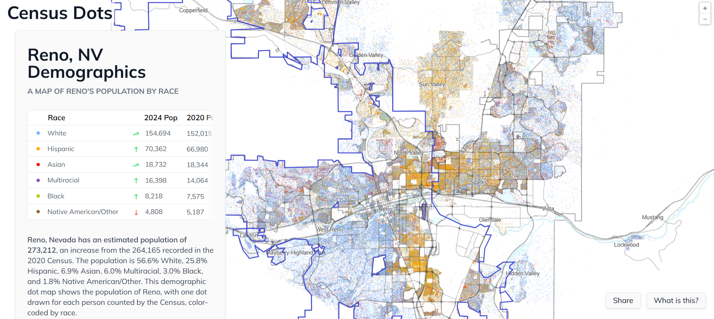

The release of the iPhone in 2007 brought a new era in the world. While it ushered in the age of social media and gave people instant access to information and websites like Craigslist, it decimated the classified ads that helped subsidize up to 30% of the revenue for local media. Research by the Stanford Graduate School of Business found that this loss of classified ads impacted coverage of local politics, because it cost papers more to produce political news compared to entertainment and sports. This revenue vacuum forced local media to consolidate or terminate, stripping communities of their voice.
The decline created what The Center for Innovation and Sustainability in Local Media defines as a news desert "a community, either rural or urban, with limited access to the sort of credible and comprehensive news and information that feeds democracy at the grassroots level." For ethnic communities whose primary language isn’t English, this crisis is amplified. In markets where newsrooms are already strained, the loss of a single outlet creates a substantial information gap.
The Problem
Listen to the Audio Story
The 2020 U.S. census recorded nearly 65 million Latinos in the United States, constituting the country’s second-largest ethnic group. According to The Pew Research Center, nearly half of this demographic is U.S.-born. Furthermore, the census found Spanish to be the second most spoken language in the nation, with more than 40 million speakers.
With a demographic of this magnitude, Latinos require a robust media infrastructure to inform their community on issues impacting their daily lives. The State of Latino News Media, a project created in 2019 by the CUNY School of Journalism, analyzed and recorded the different news outlets serving Latinos. Of the 600 newsrooms identified, five states contained over half of these outlets: California, New York, Texas, Florida and North Carolina. This leaves states like Nevada, which contains nearly a million Latinos, with a scarcity of Spanish-language media.
![This is a map of the United States with different dots around the country showing the location of the different Latino Media that the CUNY Project found, along with every state shaded in light blue to dark blue. The darker the blue, the more Latinos are in a given state. New York, Texas, California, and Florida are the darkest states and have the most dots located in their borders. Meanwhile, Montana, Wyoming, North and South Dakota are the lightest states and have no dots located in their borders.](LatinMediaMap.png)
For the Latinos living in Washoe County, who make up nearly 30% of the population in the county according to the US census, there is an insufficient amount of coverage. Maria Palma, a reporter with KUNR Public Radio and producer of Al Aire, a Spanish-language newscast, which aims to fill the information gaps for Washoe County's high percentage of Spanish speakers. "30% of Washoe County's population speaks Spanish,” Palma said. “As long as we have those people living here, services in their own language will exist. We can't really ignore that we have people here speaking different languages.”
With Nevada’s media concentrated around Reno and Las Vegas, this leaves the rural communities in the state underrepresented. This news desert, Palma said, is created by the lack of reporters. “There are a lot of things going on in rural communities and other parts of the state, and we can't really get to them because we are only like five, four reporters in the newsroom, so it's really hard."
The consequences of having a lack of personnel are notable in the areas of public health and climate change. When newsrooms are stretched thin, communities are more susceptible to environmental impacts due to the lack of hyper-local coverage. A study by the National Library of Medicine, “Toward Language Justice in Environmental Health Sciences in the United States: A Case for Spanish as a Language of Science”, determined that the information gap prevents Spanish-speakers from properly comprehending the effects of a changing environment.
In Nevada, this information gap overlaps with specific geographic vulnerabilities. Leo Murrieta is the director of Make the Road Nevada, a non-profit that assists Latinos in Nevada with a variety of issues, including environmental justice. He observed that the high concentration of Latinos intensifies their exposure to environmental hazards. "East Las Vegas is where the overwhelming majority of the state's Latin population lives,” Murrieta said. “There's this huge rectangle here in Southern Nevada where I think something like 70% of the whole state's Latino population lives. And there is a drop. There's a literal valley within the valley here in Clark County, and that is where we live.”

East Las Vegas is severely impacted by the urban heat island effect. Research by the Desert Research Institute found that an urban heat island is characterized by concrete and a lack of green space, which traps heat from the atmosphere. As a result of the news desert, Latinos continue to cluster around urban areas like East Las Vegas, unaware of potential damage to their health. A DRI study found that in Reno, the neighborhood of Sun Valley, and the communities living alongside Wells Avenue are the warmest parts of the city, and just like East Las Vegas they're areas where Latinos settle.
![Shows 3 different heat maps of Reno where the Desert Research Institute mesured the tempature throughout the city at 3 different points of the day, 6-7 am found to have a high tempature of 67.2 degrees and a low of 48.9 degrees, 3-4 pm found to have have a high of 96.4 degrees and a low of 86 degrees, and 7-8 pm found to have a high of 89.6 degrees and a low of 78.9 degrees. followed by a graph that shows the anomalies of the different temperatures, with 3-4 pm and 7-8 pm being the hottest points of the day.](RenoMap.png)

Apart from any discomfort or illness due to the extreme heat, it also creates a financial burden. The warmest areas of the city face higher cooling costs, intensified by the chokehold NV Energy has on its customers. Murrieta says that these people face the highest rates of energy in the state. “Real people who are having to decide between paying the light bill and paying their rent, and buying groceries,” Murrieta said.
Rising temperatures aren't the only invisible threats; the air people breathe is being polluted. Hilda Berganza, climate manager at the Hispanic Access Foundation, leads El Aire Que Respiramos (or The Air We Breathe in English), a project targeting cities around the country with concerning air quality and a high population of Latinos. Over the past three years, they’ve placed Environmental Protection Agency sensors throughout these cities to monitor the Particulate Matter. The EPA defines any microscopic particles under 2.5 micrometers that can enter the body and cause serious health problems.

In the city of Henderson, Berganza observed that the air quality is often affected by environmental events in neighboring states. “Henderson is really interesting in the sense that we have had huge spikes of PM2.5 and then really low levels. And it kind of is dependent on several things. So, any smoke that's coming from any of the neighboring cities or states.”
While a media outlet can provide coverage on these environmental events, such as the fires that ripped through Los Angeles in 2025, the adverse effects of the soot that gets carried over might get overlooked. In a news desert, the health hazards that come from poor air quality impact the most vulnerable members of the communities, like children or the elderly.
“How do you feel not knowing that there's a wildfire near you? I don't know, right? Or like, hey, I heard that you have had asthma attacks since you were 9 and they're getting worse. What is that like for you? And how is that impacting your medical bill?” Berganza said, alluding to the fact that without proper information, people in these communities are not aware of these preventable health issues. If Latino families were more informed about how to combat horrible air quality, there would be less of a financial burden on these families, having to spend thousands of dollars on medical bills.
The CUNY project highlighted that even when news outlets exist, they don’t serve communities equally. This project didn’t take public comments; however, in gathering information, the students found that in a major market like the Bay Area, which has Latino news outlets, the focus is localized within the city limits. Suburban communities outside the city, such as those in Oakland, don’t feel equally represented.
These major markets will focus on daily news or the big headline features. These stories are prioritized for immediate impact by an editor, who will choose to leave different stories for a different day. In a newsroom stretched so thin, this causes certain stories to be left behind and in many cases, creates a delayed reaction.
Without the attention of the media, the burden is placed on advocacy groups like Make the Road Nevada. Without the coverage of local media, Murrieta launched a campaign in the City of Las Vegas to bring more attention to the lack of trees in the city. He said that, in addition to planting more trees, the types of trees being planted are important. “We primarily only plant male trees, which produce extremely high levels of pollen. And the air flows from the west to the east, which drives all of that pollen and that bad air quality over to the east side, where it sits on the ground and creates some of the highest rates of asthma in the entire state.” The campaign led to Murrieta working with the city arborist to ensure that, as they are redeveloping parts of the city, there needs to be more green space available for people to cool off and more female trees planted to help those more affected by pollen.
When newsrooms only have a limited number of reporters, this tree planting story doesn’t have the same weight; it will get left out unless there is an editor who prioritizes it. Once again, when stories like these are untold, they leave communities unaware of the hazards and suffering from preventable problems.
While these examples have primarily been focused on Nevada, the patterns can be seen all over the country. Just like the Oakland residents in the Bay Area market, the suburban communities on Long Island in New York and Los Angeles in California are overshadowed by the city center.
Berganza’s project echoes a similar concept.“Even if there's not an EPA sensor near you,” she said, “staying alert to what's happening in the environment is going to make a big difference for you, a family, and just your community in general,” she said. The environmental problems aren't isolated incidents; the pattern repeats because communities are not informed.
The underlying issue of a news desert is ensuring communities have the necessary information to thrive. “Not all of us have the same access to the internet or access to Spanish-speaking materials,” Berganza said, “So sharing that information with your loved ones if you see it, is super important because that's how we get the word out, especially as asthma rates and other rates can increase. We just want to keep each other safe.” This is why ethnic communities like Latinos are formed, to create a support system that helps one another.
Reporters can be the bridge that takes those stories and disperses them into a community. If the news desert environment widens, it could become difficult to close the gap, but having Spanish-language media in a community is fertile ground for a healthier population